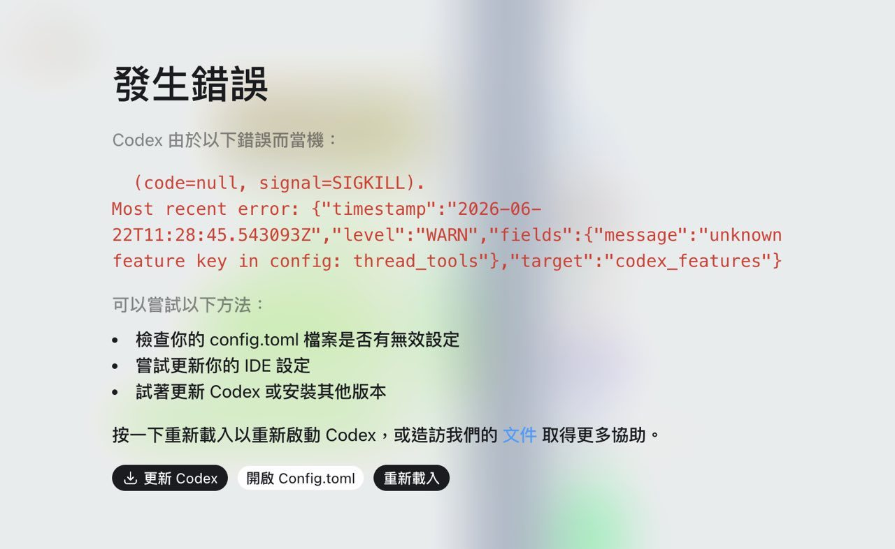
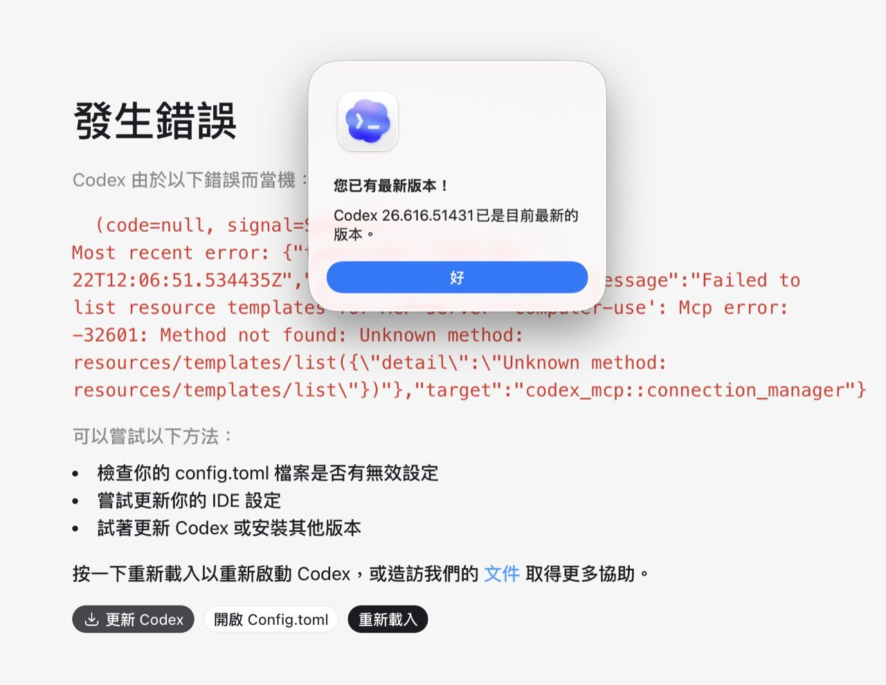
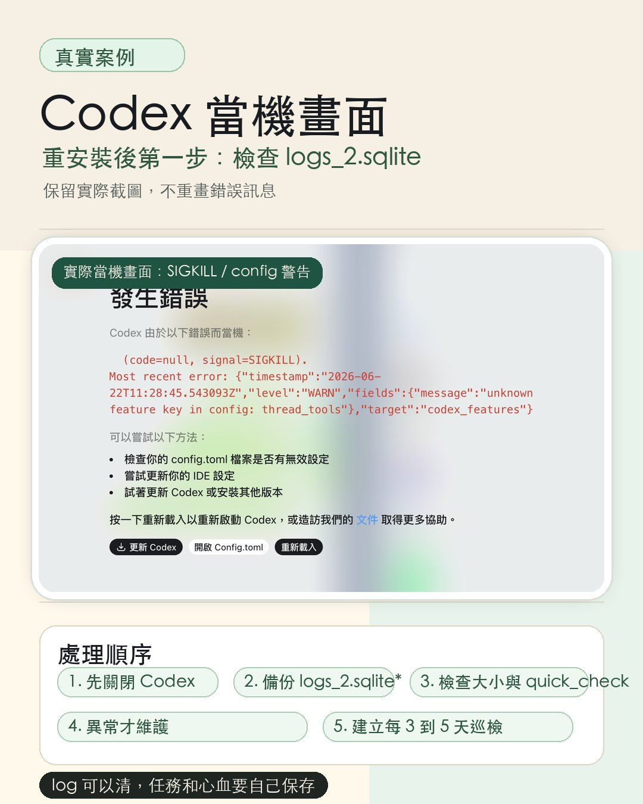
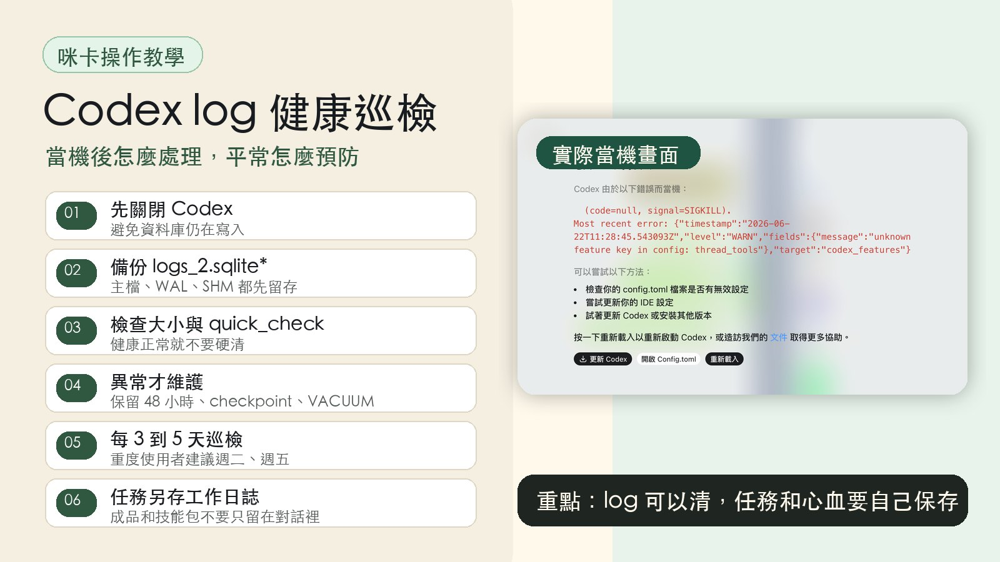

What This Article Covers
Using a real crash case from a student as the starting point, this article addresses four things: what the local log database logs_2.sqlite actually is, how to handle it safely when Codex won't open, how to set up an automated health check that runs every three to five days, and how to make sure your work survives even when the tool breaks down. The technical references are drawn from related issues and source code in the OpenAI Codex GitHub repo, not from any official announcement.
- You rely on Codex Desktop every day, and one day it simply refuses to open no matter how many times you try.
- You've updated to the latest version or even reinstalled, and you're still worried the same thing could happen again.
- You've heard of logs_2.sqlite, WAL, and VACUUM but aren't sure whether to touch them or whether doing so could make things worse.
- Your biggest fear is that a broken tool takes your recent tasks and work context down with it.
- A clear understanding of what logs_2.sqlite is and what it isn't, and why it can drag down Codex's startup.
- A conservative handling sequence for crashes: back up first, inspect first, avoid deleting unless necessary.
- A health-check automation prompt you can paste directly into Codex, with inspection-only mode as the default.
- A work habit that keeps your knowledge assets safe even when tools fail.
What Actually Happened
The student's Codex Desktop kept refusing to open. The screen displayed an error with signal=SIGKILL, config.toml, and suggestions to update Codex or reload. Updating to the latest version still didn't resolve it. A full reinstall was what finally brought it back.



Getting the Framing Right
It's easy to describe this situation as "OpenAI officially says Codex has this bug." The accurate framing requires more caution.
Multiple related issues in the OpenAI Codex GitHub repo point to risks such as an oversized logs_2.sqlite, a corrupt log database, a WAL file that keeps growing, or high-volume TRACE log writes. These are community reports and maintainer discussions, not official announcements.
logs_2.sqlite is one plausible cause worth checking first. It is not the single definitive answer for every Codex crash. There may be other causes at play. This article focuses on the part that leaves a traceable trail and can be safely inspected on your own.
Getting the framing right prevents the response from going off course. The goal is to "check this high-probability, self-inspectable area first," not to conclude that "the log database is always to blame." Links to the full issues are in the references section at the end.
What Does logs_2.sqlite Actually Store?
logs_2.sqlite is the local SQLite log database used by Codex Desktop. Think of it as an operational record: diagnostic data the program writes as it runs. It is not your work log, not a skill package, not a memory store, and not an output folder.
Timestamps, log levels, targets, error messages, tracing spans, connection and tool execution states, and other diagnostic data the program needs to retain while running.
It is not a place for your own notes, and it is not suitable as a long-term storage location for finished work. Task conclusions, deliverables, and skill packages should be saved as your own files.
The log may contain local paths, error fragments, tool call summaries, or information about your working environment. Cleaning and backing it up is fine. Sending the raw database around is not recommended.
Looking through the repo, several related reports emerged: some users found that moving logs_2.sqlite* out of the way caused Codex to rebuild the log database from scratch. Others reported issues caused by WAL files, TRACE-level logs, or database corruption. This suggests the file has a life of its own and is worth treating as a local database that can grow over time, not something you can safely ignore indefinitely.
What to Do When Things Break
Two paths, depending on your situation. If you're comfortable with terminal commands or have Claude Code installed, take Path A, the conservative full sequence. If you're newer to this, Path B's three steps are enough.
Path A: You're Comfortable with Commands, or You Have Claude Code
If you can work with the terminal or have Claude Code available, ask Claude Code to follow the conservative sequence below. The goal is to preserve the current state first, then let Codex rebuild the log state it can rebuild. Every step follows the same principle: back up before touching anything.
Fully close Codex before doing anything. Touching the database while it's still writing is risky.
Back up ~/.codex/logs_2.sqlite, logs_2.sqlite-wal, and logs_2.sqlite-shm. Keep copies of all three before proceeding.
Check the sizes of the main file, WAL, and SHM, then run a SQLite quick_check. If the database is healthy and not oversized, just report the status. Do not force a cleanup.
If the main file is oversized, the WAL is oversized, the row count is abnormal, or quick_check fails, confirm that a full backup exists first. Then retain only the last 48 hours of logs and run checkpoint, VACUUM, and PRAGMA optimize.
If safe cleanup still isn't possible, move logs_2.sqlite* to a backup folder and let Codex rebuild the log database. Back up before this step too. Do not delete the files directly.
If Codex still won't start after all of the above, then consider uninstalling and reinstalling. After reinstalling, set up the automated health check described in the next section immediately.
Path B: You're New to This, Follow These Three Steps
If the commands feel overwhelming, skip them. Three steps is all you need to remember.
Reinstall Codex directly. Accept that local tasks may be lost in the process. In this situation, getting Codex back online is the priority.
Once it restarts, don't rush into a new task. Opening a new task immediately means logs start accumulating again, and the database may overflow quickly and crash again. The very first thing after a successful restart is to clear the logs.
After clearing the logs, set up the automated health check described in the next section. It will run regular inspections going forward so you're unlikely to need a reinstall again.

Preventing the Problem: Let Codex Run Its Own Health Check
Waiting for a crash to act is more expensive than running regular checks. If you use Codex every day, running the check every three to five days is a reasonable rhythm. Personally, I run it Tuesday and Friday mornings. If you use Codex occasionally, once a week is enough.
Check every three to five days. My personal preference is Tuesday and Friday. Suggested thresholds for triggering maintenance: main file over 300MB, WAL over 100MB, row count over 120,000, or a failed quick_check.
Once a week is sufficient. The goal is consistent inspection, not daily cleaning. When an issue is found, confirm the backup exists before taking any action.
Open a New Codex Conversation and Paste This Prompt
The safety boundaries above are baked into the prompt: inspect only, no cleanup unless triggered, report and produce a handoff prompt when thresholds are met, stop immediately when uncertain. Before pasting, replace the username in the paths with your own, or ask Codex to detect and substitute the current machine's paths automatically.
/Users/your-username/ automatically. Please don't modify hidden folders on your own, and don't delete the entire .codex folder.
How to Keep Your Work Safe When Tools Break
The real lesson from this incident is not to treat Codex's local state as your only storage location. Tools get updated, break, and get reinstalled. Your knowledge assets need to be protected by your own habits. Here are the three things I rely on.
When a task wraps up, write down what you did, where the output lives, what problems came up, and what the next step is. Save it as your own work log.
Articles, images, slides, code, prompts, reports: all of these should be saved as files in a location you can find. Don't leave them only inside a conversation.
If a process is worth repeating, write it up as a skill package or SOP. When Codex breaks, Claude, another agent, or your next machine can still read and pick it up.
With these three habits in place, if Codex ever goes down completely, the situation is just a tool switching problem. Your work context is still intact. You're not starting from zero.
Thirty-Second Recap
- When Codex Desktop won't open, updates don't help, and a reinstall is the last resort: check
logs_2.sqlitefirst after reinstalling. - The evidence comes from related issues and source code in the OpenAI Codex GitHub repo. It is one plausible cause worth checking first, not the only possible explanation for every crash.
- Two paths: if you're comfortable with commands or have Claude Code, use the conservative sequence (close Codex, back up all three log files, run quick_check, don't force cleanup when healthy, only do maintenance after confirming backups, stop immediately on lock or permission errors). If you're newer, reinstall, clear the logs before starting any new task, then set up the automated check.
- Set up an automated health check to run every three to five days, in inspect-only mode by default. When thresholds are reached, output a maintenance handoff prompt and wait for Codex to be closed before proceeding.
- Write a work log after each task. Save outputs to your own files. Turn reliable workflows into skill packages.
References: Issues and Source Code
Everything below comes from the OpenAI Codex GitHub repo, not from any official OpenAI announcement. These issues point to risks including an oversized log SQLite database, WAL anomalies, a corrupt log database, or high-volume TRACE log writes, all of which support the judgment that logs_2.sqlite is worth checking first.
- openai/codex issue #27741: Reports Codex Desktop failing to start due to a large
logs_2.sqlite; moving the log database out allowed it to be rebuilt. - openai/codex issue #24001: Reports a corrupt
logs_2.sqlitecausing issues; renaming the log database restored functionality. - openai/codex issue #29463: Reports high-volume TRACE WebSocket logs being written into
logs_2.sqlite. - openai/codex issue #28997: Discusses WAL growth and the risk of deleting a live WAL file directly.
- Codex source code: config/mod.rs: Shows the local path conventions for Codex home, sqlite home, and log directory.
The One Line That Matters
Logs can be cleared. Your tasks and work belong in your own files. Build the log health check, the automated inspection, the work log habit, and the skill package practice. When a tool breaks, it's just a tool breaking. Your work context stays with you.
Two free talks every month.
Join the LINE Community ↗